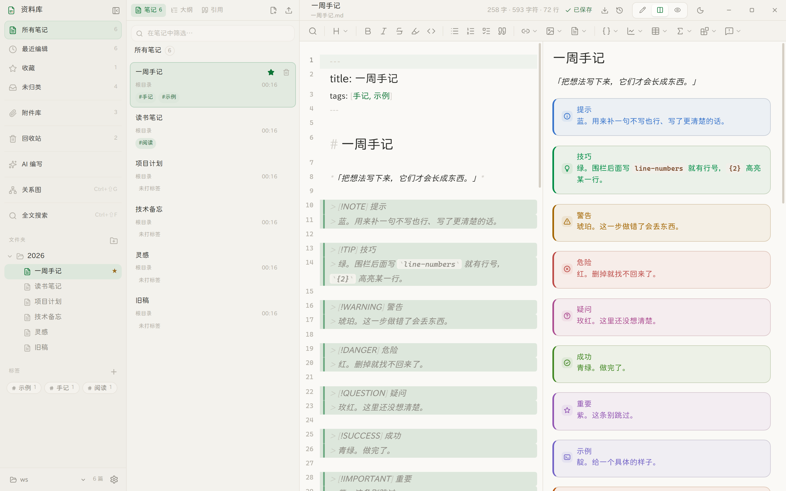

文件躺在你自己的目录里，就是一份份普通的 Markdown。 不联网、不上传、不要账号 —— 换任何编辑器打开都还是你写的那些字。
Windows 10 / 11 · 安装版 76 MB，免安装版 70 MB

没有插件市场，没有云端同步，没有「工作区协作」。该有的编辑能力一个不少。
笔记就是你自己目录里的 .md 文件。断网照常写，换台机器拷走就行，谁也拿不走。
左写右看的分栏视图、行号、代码高亮、补全。写出去的是标准 Markdown，别的工具也认。
[[笔记]] 指过去、![[笔记]] 拉进来、[[笔记#^块]] 指到某一段。
都能弹选择器选，不用手打。关系图把谁提到了谁画出来。
十一种提示块各有各的颜色和记号；Mermaid 图表配色跟着深浅主题走，换主题会重画。
Markdown / HTML / PDF / Word 都能导，排版跟屏幕上一模一样 —— 公式、图表、脚注都在。
能接你自己的模型（Ollama 或任意兼容接口）。不填就不出现，绝不偷偷往外发一个字。
下面每一张都是真实界面，不是画出来的示意图。
分栏视图下源码和渲染结果同步滚动 —— 滚到哪儿，另一边就跟着到哪儿。 也有纯编辑和纯阅读两种模式，Ctrl+/ 那一排按钮切。
> [!TIP] 这样的写法会被渲染成带记号的块。
提示、技巧、警告、危险…… 十一种类型各一个色相、一个图标，
一页扫下来轻重分明，不用读完才知道哪条要紧。
#标签、块 ID ^块
列表能告诉你有 60 篇，但看不出哪篇是枢纽、哪几篇是孤岛。
关系图把 [[双链]] 画成连线 —— 空心的是还没跟任何东西连上的笔记，
它们通常最该被翻出来看看。

Ctrl+P 只搜标题和路径，几十毫秒就有结果； Ctrl+Shift+F 连正文一起搜，命中那一行直接给你看。 「引用」页签则是反过来：哪些笔记提到了当前这一篇。

深浅两套主题各自取过对比：纸张不是纯黑，强调色在暗底上单独调过亮度， 图表的颜色也会重新画一遍（它们是烙在 SVG 里的，不重画不会变）。